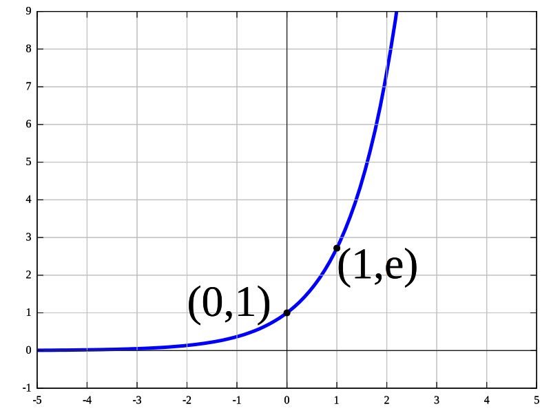

Implementing Math Operations From Scratch
04 July 2021
In programming, we use a lot of mathematical functions and operations without thinking much about how they work, or how they're implemented. In this post, I'm going to walk through and explain how one could implement a few common math functions. The implementations here are not taken from any particular library. Standard library implementations of math functions are commonly highly optimized and can sometimes be hard to read. The purpose of this blog post is to make the code very readable and understandable, with some performance optimizations sprinkled on top so long as it doesn't hinder readability.
Today, we'll be taking a look at:
- ex
- Natural Logarithms
- Square Root
- Power
Let's start by looking at one of the most useful numbers in existance, e.
Euler's number, or e is a mathematical constant that is better generalized by the exponential function, namely the exponential function evaluated at 1
More generally,
The exponential function is convienently defined by a Taylor Series, which we can see below.
In Computer Science, we have the awful conundrum of trying to simulate real mathematics (i.e., operations on real numbers) with finite precision. We attempt to approximate fields with infinite precision with finite precision constructs such as floating point numbers, which fail to meet even the basic group axioms (e.g., associativity). Such a conundrum means that for most scientific computing work, we must make do with approximations of real numbers.
Fortunately, in this case, exp(x) is a convergent series, and therefore we can approximate the true result with a finite number of terms from the Taylor Series.
Let's use this Taylor Series to implement the exponential function in C. The first thing that we can notice from the definition of exp(x) is that the divisors are all constant values. This means that we can compute them ahead of time, which can save us some CPU cycles. We'll start by generating a table of the pre-computed denominators. For this post, we'll stick to purely 32 bit single precision IEEE-754 floating point representations, hense the f suffix to each number. We'll also keep everything 32 byte aligned so that we can use AVX operations on this array.
static const float EXPF_DIVISORS[] __attribute__((aligned(32))) = {
2.0f,
6.0f,
24.0f,
120.0f,
720.0f,
5040.0f,
40320.0f,
362880.0f,
3628800.0f,
39916800.0f,
479001600.0f,
6227020800.0f,
87178291200.0f,
1307674368000.0f,
20922789888000.0f,
355687428096000.0f,
6402373705728000.0f,
121645100408832000.0f,
2432902008176640000.0f,
51090942171709440000.0f,
1124000727777607680000.0f,
25852016738884976640000.0f,
620448401733239439360000.0f,
15511210043330985984000000.0f,
403291461126605635584000000.0f,
10888869450418352160768000000.0f,
304888344611713860501504000000.0f,
8841761993739701954543616000000.0f,
265252859812191058636308480000000.0f,
8222838654177922817725562880000000.0f,
263130836933693530167218012160000000.0f,
8683317618811886495518194401280000000.0f
};
Now that we have precomputed this table of denominators, we can get into the meat and potatoes of this algorithm, the Taylor Series. Based on the formula for exp(x), we will be raising x to a power in each term. One thing we can see right away however, is that the power is always an integer. This is an important point to notice for optimization purposes, because this means we can use repeated multiplication (which is fast) instead of the pow() function (which is slow).
Another interesting note, there is a very useful property of exponents such that the following is true.
Given this property, if we want to compute x100, we don't have to perform x * x * x * x * ... * x one hundred times if we already have other powers of x computed! For example, if we already have x50 computed, we can simply perform x50 * x50 = x100
Concretely, for this implementation we can first find
After computing all of the numerators, we can then perform the divisions. I'm writing this on an x86_64 machine, so I'll be using AVX SIMD intrinsics to speed up the computation by performing 8 divisions at a time. Let's see these concepts in action.
static float myexpf(float x) {
size_t i;
float numerators[32] __attribute__((aligned(32)));
float result[32] __attribute__((aligned(32)));
double acc = 1.0 + x;
/* order of operations with floats is important. It's best to
* multiply terms of similar orders of magnitude to avoid loss in
* precision. */
float x2 = x * x;
float x3 = x2 * x;
float x4 = x2 * x2;
float x5 = x2 * x3;
float x6 = x3 * x3;
float x7 = x4 * x3;
float x8 = x4 * x4;
float x9 = x5 * x4;
float x10 = x5 * x5;
float x11 = x6 * x5;
float x12 = x6 * x6;
float x13 = x7 * x6;
float x14 = x7 * x7;
float x15 = x8 * x7;
float x16 = x8 * x8;
float x17 = x9 * x8;
float x18 = x9 * x9;
float x19 = x10 * x9;
float x20 = x10 * x10;
float x21 = x11 * x10;
float x22 = x11 * x11;
float x23 = x12 * x11;
float x24 = x12 * x12;
float x25 = x13 * x12;
float x26 = x13 * x13;
float x27 = x14 * x13;
float x28 = x14 * x14;
float x29 = x15 * x14;
float x30 = x15 * x15;
float x31 = x16 * x15;
float x32 = x16 * x16;
float x33 = x17 * x16;
numerators[0] = x2;
numerators[1] = x3;
numerators[2] = x4;
numerators[3] = x5;
numerators[4] = x6;
numerators[5] = x7;
numerators[6] = x8;
numerators[7] = x9;
numerators[8] = x10;
numerators[9] = x11;
numerators[10] = x12;
numerators[11] = x13;
numerators[12] = x14;
numerators[13] = x15;
numerators[14] = x16;
numerators[15] = x17;
numerators[16] = x18;
numerators[17] = x19;
numerators[18] = x20;
numerators[19] = x21;
numerators[20] = x22;
numerators[21] = x23;
numerators[22] = x24;
numerators[23] = x25;
numerators[24] = x26;
numerators[25] = x27;
numerators[26] = x28;
numerators[27] = x29;
numerators[28] = x30;
numerators[29] = x31;
numerators[30] = x32;
numerators[31] = x33;
/*
* Use AVX to compute 8 divisions at a time
*/
for (i = 0; i < 32; i += 8) {
const __m256 a = _mm256_load_ps(&numerators[i]);
const __m256 b = _mm256_load_ps(&EXPF_DIVISORS[i]);
const __m256 res = _mm256_div_ps(a, b);
_mm256_stream_ps(&result[i], res);
}
/*
* Sum together all of the results from division
*/
for (i = 0; i < 32; i++) {
acc += result[i];
}
return acc;
}
And that's all there is to it!
Now that we've covered exponentiation, let's take a look at its inverse, logarithms! Logarithms are a little more challenging to compute, but by using Newton's Method, we can reformulate log(x) in terms of exp(x). Let's take a look at the definition of Newton's Method.
Newton's Method is an iterative algorithm where you start with a guess for what you think the true answer might be, then refine this guess by repeatedly applying the formula below.
We can solve for log(x) by solving for y - log(x). Let's consider the property of log(x) and exp(x) in that they are inverses of each other, concretely x = exp(log(x)) = log(exp(x)). Keeping this in mind, we can eliminate the logarithm from our initial equation by distributing exp to each term, and using that function in our Newton's Method approximation. Let's see that below:
First, let's find our f(y)
f(y) = exp(y) - exp(log(x))
f(y) = exp(y) - x
Next, to satisfy Newton's Method, we will need to find its derivative.
f'(y) = exp(y)
We can now fill in the formula for Newton's Method, simplifying along the way.

This formula will refine our guess for what log(x) is on each iteration, provided we start with a "good enough" guess. Newton's Method is famous for diverging when the guess is not good enough, so we need to come up with a starting value that won't make us diverge!
As stated earlier, we'll be looking at only IEEE-754 Single Precision floating point representations. Let's take a look at the spec to see if there is any useful information that this representation gives for free!

We can see that floats have an exponent section. Concretely, a floating point number equals the fraction times ten to the power of the exponent. Since log10(10x) = x, the exponent field is going to give us the log10 of our number, which we can hypothesize will be close to the natural log of the value.
In order to extract the exponent section, we can bitwise AND the number with a mask of ones in the place where the exponent bits are, then shift over by the number of bits in the fraction. If we look at the code block below, lets say that 's' is the sign bit, 'e' are the exponent bits, and 'f' are the fraction bits. Let's see how this mask works. Recall that the first 'e' bit is actually the sign of the exponent, so if we ignore negative numbers, we can ignore this bit in the mask.
seeeeeeeefffffffffffffffffffffff
& 00111111100000000000000000000000
--------------------------------
0eeeeeeee00000000000000000000000
0eeeeeeee00000000000000000000000 >> 23 = eeeeeeee
Using Python, let's convert this mask into hex.
In [1]: hex(0b00111111100000000000000000000000) Out[1]: '0x3f800000'
Finally, we just need to turn this pseudo code into C! Notice that we are type punning through a union, as casting through pointers violates strict aliasing, and therefore is undefined behavior. By going through a union, we have a portable and safe means of type punning the float to an unsigned int needed for the bitwise operations.
union FloatAsInt {
uint32_t i;
float f;
};
static float get_guess(float x) {
const uint32_t exponent_mask = 0x3f800000;
float guess;
union FloatAsInt x_as_int;
uint32_t exponent;
x_as_int.f = x;
exponent = (x_as_int.i & exponent_mask) >> 23;
guess = exponent;
return guess;
}
Now that we have a pretty good guess, we now need to refine it to be a close approximation of log(x). We will repeatedly apply the formula we derived above using Newton's Method. I found through experimentation that manually unrolling the loop was faster than a for loop, so that is why we see this copy-pasted.
static const float CLOSE_TO_ZERO = 1e-10;
static float newtons_method_log(float x, float guess) {
float y = guess;
/* manual unrolling in this case was MUCH faster than a for loop */
y = y - 1.0f + x / myexpf(y);
y = y - 1.0f + x / myexpf(y);
y = y - 1.0f + x / myexpf(y);
y = y - 1.0f + x / myexpf(y);
y = y - 1.0f + x / myexpf(y);
y = y - 1.0f + x / myexpf(y);
y = y - 1.0f + x / myexpf(y);
y = y - 1.0f + x / myexpf(y);
y = y - 1.0f + x / myexpf(y);
y = y - 1.0f + x / myexpf(y);
if (fabsf(y) < CLOSE_TO_ZERO) {
return 0;
} else {
return y;
}
}
Putting this together, let's wrap log up into an easy to use function.
float mylogf(float x) {
if (x < 0) {
return NAN;
} else if (x == 0) {
return -INFINITY;
} else if (fabsf(x) < CLOSE_TO_ZERO) {
return 1;
} else {
const float guess = get_guess(x);
float y = newtons_method_log(x, guess);
return y;
}
}
But wait, there's more!
Now that we have exp and log, we can get sqrt for free by exploiting a simple property of logarithms and exponentiation! I'll prove to you that sqrt(x) = exp(0.5 * log(x)) Remember that a^(x * y) = (a^x)^y
exp(0.5 * log(x)) = exp(log(x))^0.5 = x^0.5 = sqrt(x)
QED
We can generalize this even further into computing pow for arbitrary inputs.
exp(y * log(x)) = exp(log(x))^y = x^y = pow(x, y)
QED
Therefore, with the exp and log functions that we created from scratch above, we can use those to create pow in one line of code!
float mypowf(float x, float y) {
return myexpf(y * mylogf(x));
}
Remember, these functions are not meant for production use. The standard library of your language of choice most likely has more optimized implementations of these algorithms, but now that you can see simple ways how they work, I hope that this demystifies them. Nothing in programming is magic, someone had to write every line of code that exists!
About

This blog is about whatever I find interesting at this very moment. I'll post how-to articles on occasion and various lessons that I've learned in my career.
Me
I am a software developer from Des Moines Iowa. I graduated from the University of Iowa with a B.S. in Computer Science.
I am interested in math, compilers, and interpreters, and I always strive to understand how various systems work from the ground up.
The languages I use most often include
- C
- Rust
- Python
- C++
- Go
I like working in a UNIX or Linux environment.
Posts
- [2022-07-04] Implementing Math Operations From Scratch
- [2020-10-25] Convolutions - Where Signal Processing and Machine learning Meet
- [2020-05-14] A tale of two servers, or why I shudder at the mention of race conditions
- [2020-05-13] Let's build a Lisp interpreter in Rust! (Part 1 - Lexing)
- [2020-05-10] OpenMP - Static or Dynamic Scheduling?